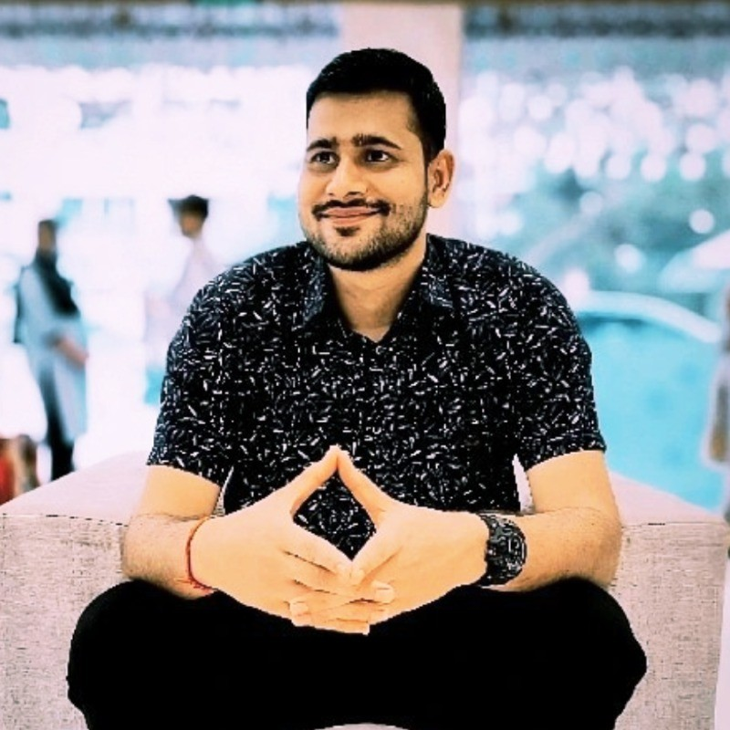

Abhinav Kumar
Software Development Engineer In Test
About Me
Experienced and results-driven SDET 2 with over 2 years of expertise in test automation, CI/CD pipelines, and API/mobile testing. Proficient in Supertest, Appium, and Jenkins, with a proven track record of leading automation efforts, streamlining release processes, and achieving zero-defect production releases.
Work Experience
Software Development Engineer in Test - 2
Slice | sliceit.com | 08/2024 - Present
- Led E2E test automation for critical backend and frontend systems, ensuring zero bug leakage in production through weekly regression testing and optimized test flows.
- Developed an MQTT (WebSocket) framework for event-driven testing of chatbot services, enhancing message flow validation and reducing manual testing efforts.
- Took ownership of CX Pod, responsible for 6 backend services with a focus on user experience, identifying potential risks, and resolving issues before development intervention.
- Played a crucial role during the transition of Slice to a bank, testing new builds, raising a high number of critical bugs, and improving system stability.
- Mentored junior team members, fostering a learning environment by providing guidance on test case creation, automation best practices, and troubleshooting.
Software Development Engineer in Test - 1
Slice | sliceit.com | 08/2022 - 08/2024
- Automated E2E testing for backend APIs (Supertest) and mobile applications (Appium), reducing manual effort and improving release velocity.
- Spearheaded the creation of robust test cases covering functional, performance, and edge scenarios, ensuring application stability.
- Managed iOS/Android app releases as Release Commander, ensuring smooth deployments, zero bug leakage, and timely releases.
- Led automation efforts for projects like In-House ChatBot, ConvoBot, and Bonfire, reducing manual testing and accelerating delivery.
- Performed manual validation of iOS/Android apps, detecting high-priority issues and ensuring consistent product quality across releases.
Skills
- Backend Automation: Supertest, JAVA
- Mobile Automation: Appium
- Test Planning and Strategy
- Manual Testing, Jira
- Webdriver io, Postman
- JavaScript
Achievements
- Quality Quest Champion Award: Top bug detection in Bugathon'24.
- Star of the Month Award: Recognized for outstanding performance in May '24.
- Super Squad Award at Slice: Key contributions to core projects.
- Spotlight Award at Slice: Ensured zero bug leakage.
- Rising Star Award in Slice: Critical work on RBI Project Don.
- Completed 100 Days of Coding Challenges.
Certifications
- Appium - Mobile Testing (Android/IOS) from Scratch+Frameworks (01/2023 - 03/2023)
- Complete Interview Preparation With Doubt Assistance (04/2022 - 02/2022)
Education
- Computer Science and Engineering, Lovely Professional University, Jalandhar (07/2018 - 07/2022), 7.6 CGPA
- XII (CBSE), D.A.V Public School, Bokaro, Jharkhand (05/2015 - 04/2017), 81%